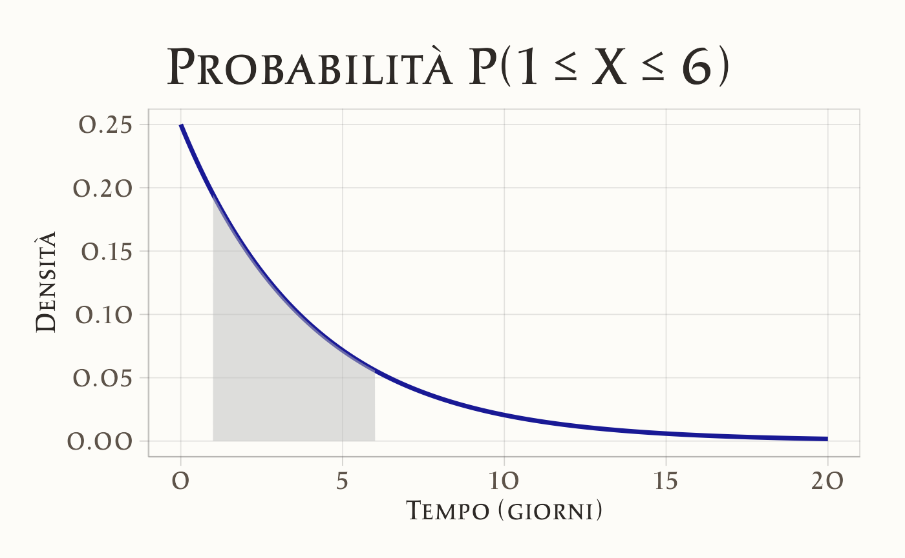

15 Distribuzioni di v.c. continue
15.1 Introduzione
Proprio come per le variabili casuali discrete, anche per le variabili casuali continue è possibile rappresentare la variabilità di una popolazione attraverso un modello statistico. Tuttavia, mentre le distribuzioni discrete si applicano a fenomeni con un numero finito o numerabile di esiti, le variabili casuali continue richiedono l’uso di funzioni di densità di probabilità (pdf), che descrivono fenomeni in cui i valori possono assumere un continuum di possibilità. Queste funzioni ci permettono di modellare e analizzare situazioni in cui i risultati non sono discreti, ma possono variare in modo continuo.
La funzione di densità di probabilità \(f(x)\) associata a una variabile casuale continua \(X\) rappresenta la distribuzione della probabilità all’interno della popolazione. A differenza delle distribuzioni discrete, dove la probabilità è assegnata direttamente a singoli valori, la pdf non fornisce la probabilità di un singolo punto, ma descrive la probabilità che \(X\) assuma valori all’interno di un intervallo specifico. Questo approccio consente di costruire un modello matematico della popolazione, utile per fare previsioni e comprendere meglio i fenomeni aleatori continui.
15.2 La Distribuzione Uniforme Continua
La distribuzione uniforme continua rappresenta un pilastro della teoria delle probabilità, caratterizzata da una densità di probabilità costante su un intervallo definito. Questo modello è particolarmente utile per descrivere fenomeni casuali dove ogni esito possibile ha identica probabilità di verificarsi, come nel caso di uno spinner perfettamente bilanciato o di un generatore di numeri casuali ideale.
15.2.1 Un esempio intuitivo: lo spinner
Consideriamo uno spinner circolare con valori angolari compresi tra 0° e 360°. Se il dispositivo è perfettamente equilibrato, ogni angolo ha la stessa probabilità di essere selezionato dopo una rotazione. Questo esperimento costituisce un’implementazione concreta della distribuzione uniforme sull’intervallo \([0, 360)\).
15.2.2 Simulazione della distribuzione: dal campione piccolo alla convergenza teorica
Per illustrare il comportamento della distribuzione, analizziamo due scenari distinti attraverso simulazioni numeriche.
Caso 1: Campione piccolo (n = 20)
Generiamo 20 valori casuali e visualizziamoli con un istogramma:
set.seed(123) # Riproducibilità dei risultati
spinner_results <- runif(20, min = 0, max = 360)
print(spinner_results) # Output dei dati
#> [1] 103.5 283.8 147.2 317.9 338.6 16.4 190.1 321.3 198.5 164.4 344.5 163.2
#> [13] 243.9 206.1 37.1 323.9 88.6 15.1 118.1 343.6
# Creazione dell'istogramma
ggplot(data.frame(Valori = spinner_results), aes(x = Valori)) +
geom_histogram(
binwidth = 10,
fill = "skyblue",
color = "black",
alpha = 0.5
) +
labs(
x = "Angolo (gradi)",
y = "Frequenza relativa"
) 
L’istogramma mostra un andamento irregolare, riflettendo la variabilità intrinseca dei piccoli campioni. Questa disomogeneità è attesa e diminuisce all’aumentare della dimensione campionaria.
Caso 2: Campione grande (n = 100,000)
Ripetiamo la simulazione con un campione esteso:
spinner_results_large <- runif(100000, min = 0, max = 360)
ggplot(data.frame(Valori = spinner_results_large), aes(x = Valori)) +
geom_histogram(
binwidth = 10,
fill = "skyblue",
color = "black",
alpha = 0.5
) +
labs(
x = "Angolo (gradi)",
y = "Frequenza relativa"
) 
L’istogramma ora rivela un profilo piatto e regolare, in accordo con la forma teorica della distribuzione. Questo risultato dimostra empiricamente la Legge dei Grandi Numeri, dove all’aumentare delle osservazioni la distribuzione empirica converge a quella teorica.
15.2.3 La Funzione di Densità di Probabilità (PDF)
Per una variabile casuale \(X \sim \mathcal{U}(a, b)\), la PDF è definita come:
\[ f(x) = \begin{cases} \displaystyle \frac{1}{b - a} & \text{se } x \in [a, b], \\ 0 & \text{altrimenti}. \end{cases} \]
Proprietà chiave:
- l’area totale sotto la curva è unitaria: \(\int_{a}^{b} \frac{1}{b - a} \, dx = 1\);
- la densità è nulla al di fuori dell’intervallo \([a, b]\).
Applicazione allo spinner:
\[ f(x) = \frac{1}{360} \quad \text{per } x \in [0, 360]. \]
Visualizzazione grafica in R:
x <- seq(-50, 410, length.out = 500)
density_uniform <- dunif(x, min = 0, max = 360)
ggplot(data.frame(x = x, y = density_uniform), aes(x = x, y = y)) +
geom_line(linewidth = 1.2, color = "blue") +
geom_vline(xintercept = c(0, 360), linetype = "dashed", color = "red") +
labs(
x = "x (gradi)",
y = "Densità f(x)"
) +
xlim(-50, 410) 
Il grafico evidenzia la densità costante nell’intervallo \([0, 360]\) e l’assenza di probabilità al di fuori di esso.
15.2.4 Calcolo delle Probabilità: Metodo Geometrico e Funzionale
La probabilità che \(X\) assuma valori in un sottointervallo \([c, d] \subseteq [a, b]\) è data da:
\[ P(c \leq X \leq d) = \frac{d - c}{b - a}. \]
Esempio applicativo:
Calcoliamo la probabilità che lo spinner si fermi tra 150° e 250°:
\[ P(150 \leq X \leq 250) = \frac{250 - 150}{360} = \frac{100}{360} = \frac{5}{18} \approx 0.2778. \]
Conferma numerica in R:
Rappresentazione grafica dell’area di probabilità:
ggplot(data.frame(x = x, fx = density_uniform), aes(x = x, y = fx)) +
geom_line(linewidth = 1.2, color = "blue") +
geom_area(
data = subset(data.frame(x, fx = density_uniform), x >= 150 & x <= 250),
aes(x = x, y = fx),
fill = "gray",
alpha = 0.5
) +
labs(
x = "x (gradi)",
y = "Densità f(x)"
) 
L’area grigia corrisponde esattamente al valore di probabilità calcolato, illustrando visivamente il concetto di integrazione della PDF.
15.2.5 Proprietà Fondamentali: Media e Varianza
Per \(X \sim \mathcal{U}(a, b)\) valgono le seguenti relazioni:
-
Valore atteso (centro della distribuzione):
\[ E(X) = \frac{a + b}{2}. \]
Esempio: Per lo spinner, \(E(X) = (0 + 360)/2 = 180\) gradi.
-
Varianza (misura di dispersione):
\[ \text{Var}(X) = \frac{(b - a)^2}{12}. \]
Esempio: Per lo spinner, \(\text{Var}(X) = (360 - 0)^2 / 12 = 10,\!800\) gradi².
15.2.6 Implementazione in R: Funzioni Principali
R fornisce quattro funzioni per lavorare con la distribuzione uniforme:
| Funzione | Descrizione | Esempio d’uso |
|---|---|---|
runif() |
Genera valori casuali | runif(5, min=0, max=1) |
dunif() |
Calcola la densità \(f(x)\) | dunif(180, min=0, max=360) |
punif() |
Calcola la CDF \(P(X \leq x)\) | punif(250, min=0, max=360) |
qunif() |
Determina il quantile per una probabilità | qunif(0.9, min=0, max=360) |
Esempi operativi:
# 1. Generazione di 5 numeri casuali in [0, 1]
runif(5, min = 0, max = 1)
#> [1] 0.0372 0.9278 0.4480 0.9159 0.3558
# 2. Valore della densità in x = 0.5 per U(0,1)
dunif(0.5, min = 0, max = 1)
#> [1] 1
# 3. Probabilità cumulativa fino a x = 0.8 per U(0,1)
punif(0.8, min = 0, max = 1)
#> [1] 0.8
# 4. Calcolo del quantile corrispondente al 50° percentile (mediana)
qunif(0.5, min = 0, max = 360)
#> [1] 18015.3 La Distribuzione Esponenziale
La distribuzione esponenziale è una distribuzione continua fondamentale per modellare il tempo di attesa fino al verificarsi di un evento casuale. La sua caratteristica distintiva è la proprietà di assenza di memoria, che la rende unica nel panorama delle distribuzioni probabilistiche.
15.3.1 La proprietà di assenza di memoria: un concetto chiave
L’assenza di memoria implica che la probabilità che un evento si verifichi in un intervallo futuro è indipendente dal tempo già trascorso.
Esempio intuitivo:
immaginiamo una persona che sperimenta attacchi di ansia improvvisi, il cui tempo tra un episodio e il successivo segue una distribuzione esponenziale. Se l’individuo non ha avuto un attacco nelle ultime 2 settimane, la probabilità che ne sperimenti uno nei prossimi 3 giorni è identica a quella di una persona appena uscita da un episodio, nel medesimo intervallo di 3 giorni.
Questa analogia illustra la proprietà di assenza di memoria: il “tempo trascorso dall’ultimo evento” (in questo caso, un attacco di ansia) non influenza la probabilità futura. Il sistema non “accumula stress” né riduce il rischio col passare del tempo senza episodi, riflettendo dinamiche tipiche di processi psicologici non legati a meccanismi di apprendimento o adattamento.
Parametri chiave nell’esempio:
- \(\lambda\) (tasso): Frequenza media degli attacchi (es. 0.1 episodi/giorno).
- \(\mu = 1/\lambda\) (media): Tempo medio tra due episodi (es. 10 giorni).
La distribuzione esponenziale modellizza così situazioni in cui il comportamento è puramente stocastico e non influenzato dalla storia precedente, come certi pattern di ansia, impulsività o reazioni fisiologiche a stimoli neutri.
15.3.2 Struttura matematica: PDF e parametri
La funzione di densità di probabilità (PDF) di una variabile \(X \sim \text{Exp}(\lambda)\) è:
\[ f(x) = \begin{cases} \lambda e^{-\lambda x} & \text{se } x \geq 0, \\ 0 & \text{altrimenti}, \end{cases} \]
dove:
-
\(\lambda\) (tasso): numero medio di eventi per unità di tempo (es. 0.25 episodi/ora).
- \(\mu = 1/\lambda\) (media): tempo medio di attesa per l’evento (es. 4 ore/episodio).
Forma alternativa con \(\mu\):
\[ f(x) = \frac{1}{\mu} e^{-x/\mu} \quad \text{per } x \geq 0. \]
15.3.3 Proprietà fondamentali
Per \(X \sim \text{Exp}(\lambda)\):
| Proprietà | Formula | Interpretazione |
|---|---|---|
| Valore atteso (μ) | \(E(X) = \frac{1}{\lambda}\) | Tempo medio di attesa per l’evento. |
| Varianza | \(\text{Var}(X) = \frac{1}{\lambda^2}\) | Dispersione cresce col quadrato di 1/λ. |
| Deviazione standard | \(\sigma_X = \frac{1}{\lambda}\) | Spread lineare attorno alla media. |
Esempio applicato.
Se il tempo medio di pubblicazione dei voti di un esame universitario è \(\mu = 4\) giorni (\(\lambda = 0.25\)), la PDF è:
\[ f(x) = \frac{1}{4} e^{-x/4} \quad (x \geq 0). \]
15.3.4 Visualizzazione della densità in R
# Definizione dei parametri
mu <- 4
lambda <- 1 / mu # 0.25
# Generazione dei punti per il grafico
x <- seq(0, 20, by = 0.1)
pdf <- dexp(x, rate = lambda)
# Creazione del grafico
ggplot(data.frame(x = x, y = pdf), aes(x = x, y = y)) +
geom_line(linewidth = 1.2, color = "darkblue") +
labs(
x = "Tempo di attesa (giorni)",
y = "Densità f(x)",
title = paste("PDF esponenziale (μ =", mu, "giorni)")
) 
Il grafico mostra un decadimento esponenziale: la probabilità decresce rapidamente all’aumentare del tempo.
15.3.5 Calcolo delle Probabilità: Tre Scenari
1. Probabilità cumulativa: \(P(X \leq 1.5)\) – qual è la probabilità che il voto venga pubblicato entro un giorno e mezzo?
Utilizziamo la funzione di ripartizione (CDF):
\[ P(X \leq 1.5) = 1 - e^{-\lambda \cdot 1.5} = 1 - e^{-0.25 \cdot 1.5} \approx 0.312. \]
Codice R:
pexp(1.5, rate = lambda) # Restituisce 0.312
#> [1] 0.313Visualizzazione:
# Area sotto la curva per X <= 1.5
ggplot(data.frame(x = x, y = pdf), aes(x = x, y = y)) +
geom_line(linewidth = 1.2, color = "darkblue") +
geom_area(
data = subset(data.frame(x, y = pdf), x <= 1.5),
aes(x = x, y = y),
fill = "gray",
alpha = 0.5
) +
labs(
x = "Tempo (giorni)",
y = "Densità",
title = "Probabilità P(X ≤ 1.5)"
)2. Probabilità intervallo: \(P(1 \leq X \leq 6)\) – qual è la probabilità che il voto venga pubblicato in un intervallo compreso tra 1 e 6 giorni dopo l’esame?
Calcoliamo la differenza tra due CDF:
\[ P(1 \leq X \leq 6) = F(6) - F(1) = e^{-0.25 \cdot 1} - e^{-0.25 \cdot 6} \approx 0.491. \]
Codice R:
Visualizzazione:
# Area per 1 <= X <= 6
ggplot(data.frame(x = x, y = pdf), aes(x = x, y = y)) +
geom_line(linewidth = 1.2, color = "darkblue") +
geom_area(
data = subset(data.frame(x, y = pdf), x >= 1 & x <= 6),
aes(x = x, y = y),
fill = "gray",
alpha = 0.5
) +
labs(
x = "Tempo (giorni)",
y = "Densità",
title = "Probabilità P(1 ≤ X ≤ 6)"
)
3. Probabilità della coda: \(P(X \geq 5.5)\) – qual è la probabilità di un ritardo nella pubblicazione del voto superiore a 5.5 giorni dall’esame?
Usiamo il complemento della CDF:
\[ P(X \geq 5.5) = 1 - P(X \leq 5.5) = e^{-0.25 \cdot 5.5} \approx 0.252. \]
Codice R:
Visualizzazione:
# Area per X >= 5.5
ggplot(data.frame(x = x, y = pdf), aes(x = x, y = y)) +
geom_line(linewidth = 1.2, color = "darkblue") +
geom_area(
data = subset(data.frame(x, y = pdf), x >= 5.5),
aes(x = x, y = y),
fill = "gray",
alpha = 0.5
) +
labs(
x = "Tempo (giorni)",
y = "Densità",
title = "Probabilità P(X ≥ 5.5)"
)15.3.6 Simulazione e convergenza alla teoria
Generiamo 1,000,000 di osservazioni da \(\text{Exp}(\lambda = 0.25)\) e confrontiamo l’istogramma con la PDF teorica:
set.seed(123)
simulated_data <- rexp(1e6, rate = lambda)
ggplot(data.frame(x = simulated_data), aes(x = x)) +
geom_histogram(
aes(y = after_stat(density)),
bins = 100,
fill = "skyblue",
color = "black",
alpha = 0.6
) +
geom_line(
data = data.frame(x = x, y = pdf),
aes(x = x, y = y),
color = "red",
linewidth = 1.2
) +
coord_cartesian(xlim = c(0, 20)) + # Escludiamo code estreme
labs(
x = "Tempo di attesa (giorni)",
y = "Densità",
title = "Dati simulati e PDF teorica"
) L’istogramma si allinea perfettamente alla curva rossa, dimostrando la Legge dei Grandi Numeri.
15.3.7 Funzioni R per la distribuzione esponenziale
R offre quattro funzioni essenziali:
| Funzione | Descrizione | Esempio d’uso | Output Esempio |
|---|---|---|---|
dexp() |
Calcola la densità \(f(x)\) | dexp(2, rate = 0.25) |
0.1516 |
pexp() |
Calcola la CDF \(P(X \leq x)\) | pexp(4, rate = 0.25) |
0.632 (≈1 - e⁻¹) |
qexp() |
Trova il quantile \(x\) per una probabilità | qexp(0.5, rate = 0.25) |
~2.773 (mediana) |
rexp() |
Genera valori casuali | rexp(5, rate = 0.25) |
[3.1, 0.8, 5.2, …] |
15.4 Distribuzione Normale
La distribuzione normale (o gaussiana) è fondamentale in statistica per modellare fenomeni naturali, sociali e psicologici. La sua importanza deriva dal Teorema del Limite Centrale, che garantisce la convergenza alla normalità per somme di variabili casuali indipendenti.
15.4.1 La Famiglia delle Distribuzioni Normali
Ogni distribuzione normale è definita da due parametri:
-
\(\mu\) (media): centro della distribuzione;
- \(\sigma\) (deviazione standard): dispersione dei dati attorno alla media.
La funzione di densità è:
\[ f(y; \mu, \sigma) = \frac{1}{\sigma\sqrt{2\pi}} e^{-\frac{(y - \mu)^2}{2\sigma^2}}. \tag{15.1}\]
15.4.2 Distribuzione Normale Standardizzata
La normale standardizzata è un caso speciale con \(\mu = 0\) e \(\sigma = 1\). Qualsiasi variabile \(Y \sim \mathcal{N}(\mu, \sigma)\) può essere standardizzata tramite:
\[ Z = \frac{Y - \mu}{\sigma}. \tag{15.2}\]
Questa trasformazione preserva la forma della distribuzione ma riporta i valori in unità di deviazione standard (Z-score), permettendo confronti universali.
15.4.2.1 Relazione tra Deviazione Standard e Distribuzione
La regola empirica 68-95-99.7 vale per tutte le distribuzioni normali, indipendentemente da \(\mu\) e \(\sigma\):
-
68.3% dei dati cade entro \(\pm 1\sigma\) dalla media;
-
95.4% entro \(\pm 2\sigma\);
- 99.7% entro \(\pm 3\sigma\).
Per intervalli specifici legati a test statistici:
- \(\pm 1.96\sigma\) copre il 95% dei dati (intervallo di confidenza al 95%);
- \(\pm 2.576\sigma\) copre il 99% (intervallo al 99%).
15.4.3 Origini storiche e connessione alla binomiale
Abraham de Moivre osservò che distribuzioni binomiali con \(n\) elevato approssimano una normale. Ad esempio:
- con \(n=10\) e \(p=0.9\), la distribuzione è asimmetrica;
- con \(n=1000\), la forma diventa simmetrica e campanulare.
15.4.4 Simulazione di Passeggiate Casuali
La distribuzione normale emerge naturalmente come risultato della somma di un gran numero di effetti casuali indipendenti, un principio formalizzato dal Teorema del Limite Centrale. Questo la rende ideale per modellare:
-
errori di misurazione, dove piccole fluttuazioni casuali (strumentali, ambientali, umane) si combinano;
-
fenomeni biologici multifattoriali come altezza, peso o QI, influenzati da decine di fattori genetici, ambientali e nutrizionali che interagiscono in modo additivo;
- processi sociali come i punteggi dei test, dove il risultato finale è il prodotto cumulativo di abilità innate, studio, stato emotivo e altro.
Simulazione con passeggiate casuali
Per visualizzare concretamente questo fenomeno, consideriamo una passeggiata casuale unidimensionale semplificata:
-
Impostazione:
- 1,000 partecipanti partono dalla posizione 0;
- ogni partecipante compie 16 passi consecutivi;
- ogni passo è determinato da un generatore casuale che assegna uno spostamento compreso tra -1 e +1 unità (simulando l’effetto di piccole perturbazioni indipendenti).
- 1,000 partecipanti partono dalla posizione 0;
-
Dinamica:
la posizione finale di ciascun partecipante è la somma algebrica degli spostamenti casuali. Nonostante ogni passo individuale segua una distribuzione uniforme, la posizione finale aggregata di tutti i partecipanti mostrerà una distribuzione a campana tipica della normale.
# Parametri
numero_passi <- 16
ripetizioni <- 1000
# Generazione di passeggiate casuali
set.seed(123)
x <- matrix(0, nrow = numero_passi + 1, ncol = ripetizioni)
for (i in 1:ripetizioni) {
passi <- runif(numero_passi, min = -1, max = 1)
x[-1, i] <- cumsum(passi)
}
# Grafico delle passeggiate casuali
df <- data.frame(
Passo = rep(0:numero_passi, times = ripetizioni),
Distanza = as.vector(x)
)
ggplot(
df,
aes(
x = Passo,
y = Distanza,
group = rep(1:ripetizioni, each = numero_passi + 1))
) +
geom_line(color = "blue", alpha = 0.05) +
labs(
title = "Passeggiate Casuali",
x = "Numero di Passi", y = "Distanza dall'Origine"
)# Codice di simulazione (esempio concettuale)
set.seed(123)
n_partecipanti <- 1000
n_passi <- 16
# Genera spostamenti casuali (-1 a +1)
spostamenti <- matrix(runif(n_partecipanti * n_passi, min = -1, max = 1), ncol = n_passi)
# Calcola le posizioni finali
posizioni_finali <- rowSums(spostamenti)
# Visualizzazione
ggplot(data.frame(Posizione = posizioni_finali), aes(x = Posizione)) +
geom_histogram(aes(y = after_stat(density)), bins = 30, fill = "lightblue", alpha = 0.7) +
stat_function(fun = dnorm, args = list(mean = mean(posizioni_finali), sd = sd(posizioni_finali)), color = "red", linewidth = 1) +
labs(title = "Distribuzione delle posizioni finali", x = "Posizione", y = "Densità") 
Risultato atteso:
l’istogramma delle posizioni finali aderirà alla curva rossa (normale teorica), dimostrando come la combinazione di piccole variazioni casuali produca una distribuzione gaussiana, anche partendo da passi non-normali. Questo esperimento illustra l’onnipresenza della normale in contesti reali governati da molteplici fattori indipendenti.
Perché 16 passi?
La scelta di 16 passi non è arbitraria:
- un numero ridotto di passi (es. 3-5) produrrebbe una distribuzione ancora vicina all’uniforme;
- con 16 passi, la simmetria e la curvatura tipica della gaussiana diventano chiaramente riconoscibili senza richiedere simulazioni massicce.
15.4.5 Proprietà fondamentali
-
Media: \(\mathbb{E}(Y) = \mu\);
- Varianza: \(\mathbb{V}(Y) = \sigma^2\).
15.4.6 Funzioni R per la Normale
| Funzione | Descrizione | Esempio |
|---|---|---|
dnorm() |
Densità a un punto \(y\) | dnorm(115, mean=100, sd=15) |
pnorm() |
Probabilità cumulativa \(P(Y \leq y)\) | pnorm(115, mean=100, sd=15) |
qnorm() |
Quantile per una probabilità \(p\) | qnorm(0.975, mean=100, sd=15) |
rnorm() |
Genera valori casuali | rnorm(10, mean=100, sd=15) |
15.4.7 Visualizzazione delle aree critiche
Le aree sotto la curva corrispondenti a \(\pm 1\sigma\), \(\pm 1.96\sigma\), e \(\pm 3\sigma\) possono essere visualizzate in R:
# Esempio per ±1.96σ (95% di confidenza)
mu <- 100
sigma <- 15
x <- seq(mu - 4*sigma, mu + 4*sigma, length.out=1000)
df <- data.frame(x=x, pdf=dnorm(x, mu, sigma))
ggplot(df, aes(x=x, y=pdf)) +
geom_line(color="blue") +
geom_area(data=subset(df, x >= mu - 1.96*sigma & x <= mu + 1.96*sigma),
fill="gray", alpha=0.5) +
labs(title="95% dei dati entro ±1.96σ", x="Valori", y="Densità") In sintesi, la distribuzione normale standardizzata permette di standardizzare qualsiasi fenomeno Gaussiano, rendendo confrontabili dati eterogenei. La relazione tra deviazioni standard e aree sottese è universale: indipendentemente dalla media e varianza originale, il 68-95-99.7% dei dati cadrà sempre entro 1-2-3σ.
Una psicologa vuole studiare i livelli di ansia tra gli studenti universitari durante la settimana degli esami. Dalle ricerche precedenti si sa che nella popolazione universitaria:
- il punteggio medio di ansia è di 50 punti su una scala da 0 a 100;
- la deviazione standard dei punteggi di ansia è 10 punti.
La psicologa decide di estrarre un campione casuale di 25 studenti.
Vogliamo usare la distribuzione campionaria della media per rispondere a due domande:
- Qual è la probabilità di ottenere una media campionaria maggiore di 54 punti?
- Quale media campionaria rappresenta il 95° percentile della distribuzione campionaria?
📘 Concetti chiave.
La distribuzione campionaria della media ha:
- la stessa media della popolazione (\(\mu\)),
- una deviazione standard più piccola, detta errore standard della media (SE):
\[ SE = \frac{\sigma}{\sqrt{n}} = \frac{10}{\sqrt{25}} = 2 . \]
Useremo due funzioni importanti in R:
-
dnorm(x, mean, sd): calcola la densità della normale in un punto \(x\). -
qnorm(p, mean, sd): calcola il valore di \(x\) corrispondente a una certa probabilità cumulativa \(p\).
✅ Codice base.
# Parametri della popolazione e del campione
mu <- 50 # media della popolazione
sigma <- 10 # deviazione standard
n <- 25 # dimensione campione
# Errore standard della media
SE <- sigma / sqrt(n)
SE
#> [1] 2🔍 Domanda 1: Probabilità di ottenere una media > 54.
# Probabilità che la media campionaria sia maggiore di 54
p_oltre_54 <- pnorm(54, mean = mu, sd = SE, lower.tail = FALSE)
p_oltre_54
#> [1] 0.0228La probabilità è molto bassa. Questo vuol dire che, se la vera media della popolazione fosse 50, ottenere una media campionaria superiore a 54 sarebbe raro.
🔍 Domanda 2: Media al 95° percentile.
# Calcolo del valore soglia al 95° percentile
q_95 <- qnorm(0.95, mean = mu, sd = SE)
q_95
#> [1] 53.3All’interno della distribuzione campionaria, solo il 5% dei campioni ha una media superiore a questo valore.
📊 Grafico 1: Probabilità di media > 54
# Dati per la distribuzione normale
x_vals <- seq(44, 56, length.out = 300)
dens_vals <- dnorm(x_vals, mean = mu, sd = SE)
df <- data.frame(x = x_vals, y = dens_vals)
# Grafico
ggplot(df, aes(x, y)) +
geom_line(color = "black") +
geom_area(data = subset(df, x >= 54), aes(x, y), fill = "red", alpha = 0.4) +
geom_vline(xintercept = 54, color = "red", linetype = "dashed") +
labs(
title = "Distribuzione campionaria della media (n = 25)",
subtitle = "Area rossa = P(media > 54)",
x = "Media campionaria",
y = "Densità"
) 
📊 Grafico 2: Valore al 95° percentile
# Grafico con il 95° percentile evidenziato
ggplot(df, aes(x, y)) +
geom_line(color = "black") +
geom_area(data = subset(df, x <= q_95), aes(x, y), fill = "blue", alpha = 0.4) +
geom_vline(xintercept = q_95, color = "blue", linetype = "dashed") +
labs(
title = "Distribuzione campionaria della media (n = 25)",
subtitle = "Area blu = 95% dei campioni (valore critico ≈ 53.29)",
x = "Media campionaria",
y = "Densità"
) Domande di approfondimento.
- Perché l’errore standard della media è più piccolo della deviazione standard della popolazione?
- Se la dimensione del campione aumentasse a 100, come cambierebbe l’errore standard?
- Che cosa rappresenta
pnorm(54, ...)nel nostro contesto? - In quali casi, in psicologia, potresti voler calcolare il 95° percentile di una distribuzione campionaria?
Simulazione Monte Carlo.
Simuliamo 10.000 campioni casuali, ciascuno di 25 studenti, estratti da una popolazione normale con media = 50 e deviazione standard = 10. Per ogni campione calcoliamo la media. Alla fine, visualizziamo la distribuzione di queste medie.
set.seed(123) # per rendere la simulazione replicabile
# Parametri
mu <- 50
sigma <- 10
n <- 25
n_sim <- 10000 # numero di campioni
# Simulazione: 10.000 medie campionarie
campioni <- replicate(n_sim, mean(rnorm(n, mean = mu, sd = sigma)))
# Visualizza le prime 5 medie
head(campioni)
#> [1] 49.7 51.0 50.1 52.8 47.2 47.7📊 Istogramma delle medie campionarie.
df_sim <- data.frame(media_campionaria = campioni)
ggplot(df_sim, aes(x = media_campionaria)) +
geom_histogram(aes(y = ..density..), bins = 40, fill = "lightblue", color = "black") +
stat_function(fun = dnorm, args = list(mean = mu, sd = sigma / sqrt(n)),
color = "red", size = 1) +
labs(
title = "Distribuzione delle medie campionarie",
subtitle = "Istogramma di 10.000 medie di campioni di 25 studenti",
x = "Media campionaria",
y = "Densità"
) 
Cosa si osserva?
- Le medie non sono tutte uguali, ma si distribuiscono intorno alla media vera (50).
- La forma della distribuzione delle medie è normale, anche se i dati originali non devono necessariamente esserlo (grazie al Teorema del Limite Centrale).
- La deviazione standard della distribuzione simulata è vicina all’errore standard teorico:
Domande di approfondimento.
- Perché la forma dell’istogramma è simile a una curva normale?
- Cosa succederebbe alla larghezza della distribuzione se aumentassimo la dimensione del campione?
- Se la media osservata in un esperimento reale fosse fuori dalla zona centrale, come potremmo interpretarla?
15.5 Distribuzione Chi-Quadrato
La distribuzione \(\chi^2\) deriva dalla distribuzione normale e descrive la somma dei quadrati di \(k\) variabili casuali indipendenti e identicamente distribuite (i.i.d.) che seguono la distribuzione normale standard \(\mathcal{N}(0, 1)\). Una variabile casuale \(\chi^2_{~k}\) con \(k\) gradi di libertà è definita come:
\[ Z_1^2 + Z_2^2 + \dots + Z_k^2, \tag{15.3}\]
dove \(Z_1, Z_2, \dots, Z_k \sim \mathcal{N}(0, 1)\). Il parametro \(k\), detto gradi di libertà (\(\nu\)), determina la forma della distribuzione.
15.5.1 Funzione di densità
La densità di probabilità della distribuzione \(\chi^2_{~\nu}\) è data da:
\[ f(x) = C_{\nu} x^{\nu/2 - 1} \exp(-x/2), \quad \text{per } x > 0, \tag{15.4}\]
dove \(C_{\nu}\) è una costante di normalizzazione.
15.5.2 Simulazione della Distribuzione Chi-Quadrato
Utilizziamo la definizione per simulare la distribuzione \(\chi^2\) con 3 gradi di libertà.
# Impostare il seed per la riproducibilità
set.seed(1234)
# Generare 1000 valori casuali per 3 variabili gaussiane standard
n <- 1000
var1 <- rnorm(n, mean = 0, sd = 1)
var2 <- rnorm(n, mean = 0, sd = 1)
var3 <- rnorm(n, mean = 0, sd = 1)
# Calcolare la somma dei quadrati
chi_sq_values <- var1^2 + var2^2 + var3^2
# Creare un dataframe per il grafico
data <- data.frame(chi_sq_values = chi_sq_values)
# Istogramma e densità teorica
ggplot(data, aes(x = chi_sq_values)) +
geom_histogram(
aes(y = after_stat(density)),
bins = 30, fill = "lightblue", color = "black", alpha = 0.7
) +
stat_function(fun = dchisq, args = list(df = 3), color = "red", size = 1) +
labs(
title = "Distribuzione Chi-Quadrato (df = 3)",
x = "Valore",
y = "Densità"
)
- L’istogramma rappresenta i valori empirici simulati;
- la curva rossa rappresenta la densità teorica della distribuzione \(\chi^2_{~3}\).
15.5.3 Media e Varianza Empiriche
Calcoliamo la media e la varianza dei valori simulati:
Questi valori possono essere confrontati con le proprietà teoriche della distribuzione \(\chi^2\):
- media: \(\nu = 3\);
- varianza: \(2\nu = 6\).
15.5.4 Grafico per Diversi Gradi di Libertà
Confrontiamo le distribuzioni \(\chi^2\) per diversi valori di \(\nu\).
# Intervallo di x
x <- seq(0, 40, by = 0.1)
# Gradi di libertà
nus <- c(2, 4, 8, 16)
# Creare un dataframe
data <- do.call(rbind, lapply(nus, function(nu) {
data.frame(x = x, f_x = dchisq(x, df = nu), nu = as.factor(nu))
}))
# Grafico
ggplot(data, aes(x = x, y = f_x, color = nu)) +
geom_line(size = 1) +
labs(
x = "x",
y = "f(x)",
color = expression(nu)
) 
15.5.5 Proprietà della Distribuzione Chi-Quadrato
- Asimmetria: La distribuzione \(\chi^2_{\nu}\) è asimmetrica, ma diventa più simmetrica al crescere di \(\nu\).
- Media: \(\mathbb{E}[\chi^2_{\nu}] = \nu\).
- Varianza: \(\mathbb{V}[\chi^2_{\nu}] = 2\nu\).
- Convergenza: Per \(\nu \to \infty\), \(\chi^2_{\nu} \to \mathcal{N}(\nu, 2\nu)\).
- Somma: La somma di variabili \(\chi^2\) indipendenti con gradi di libertà \(\nu_1, \nu_2, \dots, \nu_k\) segue una distribuzione \(\chi^2\) con \(\nu = \sum_{i=1}^k \nu_i\).
15.5.6 Applicazioni
La distribuzione \(\chi^2\) è utilizzata in molteplici ambiti statistici, tra cui:
- test di indipendenza: per verificare se due variabili categoriche sono indipendenti;
- test di adattamento: per confrontare una distribuzione empirica con una teorica.
15.6 Distribuzione \(t\) di Student
La distribuzione \(t\) di Student è una delle distribuzioni fondamentali della statistica inferenziale. Deriva dalle distribuzioni Normale e Chi-quadrato ed è particolarmente utile per analizzare campioni di piccole dimensioni o situazioni in cui la varianza della popolazione è sconosciuta.
15.6.1 Definizione Formale
Se:
- \(Z \sim \mathcal{N}(0, 1)\) (distribuzione Normale standard),
- \(W \sim \chi^2_{\nu}\) (distribuzione Chi-quadrato con \(\nu\) gradi di libertà),
e \(Z\) e \(W\) sono indipendenti, allora la variabile casuale
\[ T = \frac{Z}{\sqrt{\frac{W}{\nu}}} \tag{15.5}\]
segue una distribuzione \(t\) di Student con \(\nu\) gradi di libertà. Si indica come \(T \sim t_{\nu}\).
15.6.2 Proprietà della Distribuzione \(t\) di Student
-
Forma della distribuzione:
- la distribuzione \(t\) è simmetrica rispetto a zero, come la Normale standard (\(\mathcal{N}(0, 1)\));
- presenta code più pesanti rispetto alla Normale, riflettendo una maggiore probabilità di osservare valori estremi.
-
Code pesanti e gradi di libertà:
- la pesantezza delle code diminuisce con l’aumentare dei gradi di libertà (\(\nu\));
- per \(\nu \to \infty\), la distribuzione \(t\) converge alla distribuzione Normale standard.
-
Media e varianza:
la media è \(0\) per \(\nu > 1\);
-
la varianza è:
\[ \text{Var}(T) = \frac{\nu}{\nu - 2}, \quad \text{per } \nu > 2. \]
Per \(\nu \leq 2\), la varianza non è definita.
-
Applicazioni principali:
- test t di Student: Confronto delle medie di due gruppi o test per una singola media;
- intervalli di confidenza: Stima dell’intervallo per la media quando la varianza è sconosciuta.
15.6.3 Differenze tra la Distribuzione \(t\) e la Normale
| Caratteristica | Distribuzione Normale | Distribuzione \(t\) di Student |
|---|---|---|
| Forma | Simmetrica, a campana | Simmetrica, a campana |
| Code | Sottili | Pesanti |
| Dipendenza dai gradi di libertà | No | Sì |
| Convergenza | Non varia | Con \(\nu \to \infty\), converge alla Normale |
15.6.4 Visualizzazione della Distribuzione \(t\)
Confrontiamo graficamente la distribuzione \(t\) con diversi gradi di libertà e la distribuzione Normale standard:
# Creazione dei dati
x <- seq(-4, 4, length.out = 1000)
df <- c(1, 2, 5, 10) # Gradi di libertà
# Dataframe con curve di densità
data <- data.frame(
x = rep(x, length(df) + 1),
density = c(
dnorm(x),
dt(x, df[1]),
dt(x, df[2]),
dt(x, df[3]),
dt(x, df[4])
),
distribution = rep(c("Normale", paste("t (df =", df, ")")), each = length(x))
)
# Plot
ggplot(data, aes(x = x, y = density, color = distribution)) +
geom_line(size = 1) +
labs(
x = "Valore",
y = "Densità",
color = "Distribuzione"
) 
15.6.5 Simulazione della Distribuzione \(t\)
Simuliamo una distribuzione \(t\) con 10 gradi di libertà e confrontiamola con la densità teorica.
# Impostare il seed per la riproducibilità
set.seed(123)
# Simulare 1000 valori da una distribuzione t
n <- 1000
df <- 10 # Gradi di libertà
t_values <- rt(n, df = df)
# Creare un dataframe per il grafico
data <- data.frame(t_values = t_values)
# Istogramma con densità teorica
ggplot(data, aes(x = t_values)) +
geom_histogram(
aes(y = after_stat(density)),
bins = 30, fill = "lightblue", color = "black", alpha = 0.7
) +
stat_function(fun = dt, args = list(df = df), color = "red", size = 1) +
labs(
x = "Valore",
y = "Densità"
) 15.6.6 Proprietà Teoriche della Distribuzione \(t\)
Media: \[ \mathbb{E}[T] = 0, \quad \text{per } \nu > 1. \]
Varianza: \[ \mathbb{V}[T] = \frac{\nu}{\nu - 2}, \quad \text{per } \nu > 2. \]
-
Simmetria:
- la distribuzione è simmetrica rispetto a zero, come la Normale.
-
Code:
- le code sono più pesanti rispetto alla Normale, riflettendo una maggiore incertezza per piccoli campioni.
In conclusione, la distribuzione \(t\) di Student è uno strumento versatile nell’inferenza statistica, trovando applicazione in contesti sia frequentisti che bayesiani. È particolarmente utile in situazioni in cui la conoscenza della varianza è limitata o i campioni sono di dimensioni ridotte. Grazie alla sua forma simmetrica e alle code più pesanti rispetto alla distribuzione Normale, la distribuzione \(t\) può modellare meglio l’incertezza, includendo una maggiore probabilità per valori estremi.
Nel contesto bayesiano, la distribuzione \(t\) viene utilizzata come:
- prior informativo robusto, per modellare parametri con valori plausibili lontani dalla media ma con una penalizzazione graduale per valori estremi.
- distribuzione predittiva per sintetizzare l’incertezza derivante da campioni piccoli o con variabilità elevata.
In entrambi i paradigmi, la distribuzione \(t\) rappresenta una scelta robusta, capace di riflettere in modo flessibile la natura dei dati. Inoltre, per valori elevati dei gradi di libertà, la distribuzione \(t\) converge alla distribuzione Normale, un caso limite che ne estende ulteriormente l’utilità in vari contesti analitici.
15.7 Funzione Beta di Eulero
La funzione Beta di Eulero è una funzione matematica, non una densità di probabilità, ma è strettamente collegata alla distribuzione Beta, poiché appare nella sua definizione. Indicata comunemente con il simbolo \(\mathcal{B}(\alpha, \beta)\), la funzione Beta può essere espressa in vari modi. Per i nostri scopi, utilizziamo la seguente definizione:
\[ \mathcal{B}(\alpha, \beta) = \frac{\Gamma(\alpha)\Gamma(\beta)}{\Gamma(\alpha + \beta)}\,, \tag{15.6}\]
dove \(\Gamma(x)\) rappresenta la funzione Gamma, una generalizzazione del fattoriale definita per numeri reali positivi. Quando \(x\) è un numero intero, la funzione Gamma si riduce al fattoriale traslato:
\[ \Gamma(x) = (x-1)!. \]
Esempio 15.1 Supponiamo di voler calcolare \(\mathcal{B}(3, 9)\). Utilizzando la definizione, abbiamo:
\[ \mathcal{B}(3, 9) = \frac{\Gamma(3) \cdot \Gamma(9)}{\Gamma(3 + 9)}. \]
In R, possiamo calcolarla in tre modi diversi.
- Utilizzando la definizione con la funzione
gamma():
- Utilizzando direttamente la funzione
beta()di R:
beta(alpha, beta)
#> [1] 0.00202- Calcolo manuale con fattoriali:
Tutti e tre i metodi restituiscono lo stesso risultato, confermando la correttezza della definizione.
La funzione Beta è utilizzata nella definizione della densità di probabilità Beta. Essa serve a normalizzare la densità, garantendo che l’area sotto la curva sia pari a \(1\).
15.8 Distribuzione Beta
La distribuzione Beta, indicata come \(\mathcal{Beta}(\alpha, \beta)\), è una distribuzione di probabilità continua definita sull’intervallo \((0, 1)\). È particolarmente utile per modellare proporzioni, probabilità, o in generale qualsiasi fenomeno che assume valori compresi tra 0 e 1.
Questa distribuzione è molto flessibile: a seconda dei valori dei parametri \(\alpha\) e \(\beta\), può assumere forme simmetriche, asimmetriche, concave, convesse, ecc. È frequentemente utilizzata come distribuzione a priori nei modelli bayesiani per parametri che rappresentano probabilità.
15.8.1 Definizione
Definizione 15.1 Sia \(\theta\) una variabile casuale continua. Se \(\theta\) segue una distribuzione Beta con parametri \(\alpha > 0\) e \(\beta > 0\), scriviamo:
\[ \theta \sim \mathcal{Beta}(\alpha, \beta), \]
e la sua funzione di densità di probabilità (pdf) è data da:
\[ \mathcal{Beta}(\theta \mid \alpha, \beta) = \frac{1}{\mathcal{B}(\alpha, \beta)} \, \theta^{\alpha - 1} (1 - \theta)^{\beta - 1}, \quad \text{per } \theta \in (0, 1), \tag{15.7}\]
dove \(\mathcal{B}(\alpha, \beta)\) è la funzione Beta (o funzione beta di Eulero).
15.8.2 Rappresentazione alternativa
Un’espressione equivalente della densità, che mette in evidenza il legame con la funzione Gamma, è:
\[ \mathcal{Beta}(\theta \mid \alpha, \beta) = \frac{\Gamma(\alpha + \beta)}{\Gamma(\alpha) \, \Gamma(\beta)} \, \theta^{\alpha - 1} (1 - \theta)^{\beta - 1}, \quad \text{per } \theta \in (0, 1), \tag{15.8}\]
dove \(\Gamma(\cdot)\) è la funzione Gamma, che generalizza il fattoriale: \(\Gamma(n) = (n - 1)!\) per ogni intero positivo \(n\).
15.8.3 Ruolo dei Parametri \(\alpha\) e \(\beta\)
I parametri \(\alpha\) e \(\beta\) determinano la forma della distribuzione:
- \(\alpha > 1\): favorisce valori di \(\theta\) vicini a 1.
- \(\beta > 1\): favorisce valori di \(\theta\) vicini a 0.
- \(\alpha = \beta = 1\): corrisponde alla distribuzione uniforme sull’intervallo \([0, 1]\).
- \(\alpha, \beta < 1\): la distribuzione è bimodale, concentrandosi agli estremi (vicino a 0 e 1).
15.8.4 Proprietà della Distribuzione Beta
Valore atteso: \[ \mathbb{E}(\theta) = \frac{\alpha}{\alpha + \beta}. \]
Varianza: \[ \mathbb{V}(\theta) = \frac{\alpha \beta}{(\alpha + \beta)^2 (\alpha + \beta + 1)}. \]
Moda (se \(\alpha, \beta > 1\)): \[ \text{Moda}(\theta) = \frac{\alpha - 1}{\alpha + \beta - 2}. \]
Queste proprietà evidenziano come \(\alpha\) e \(\beta\) possano essere interpretati come “successi” e “fallimenti” in una serie di prove, fornendo un collegamento intuitivo con la distribuzione binomiale.
15.8.5 Relazione con la Distribuzione Binomiale
La distribuzione Beta può essere interpretata come una generalizzazione continua della distribuzione binomiale. Mentre la distribuzione binomiale descrive la probabilità di osservare un certo numero di successi in un numero fissato di prove (\(n\)), la distribuzione Beta descrive l’incertezza sulla probabilità di successo \(\theta\) stessa, trattandola come una variabile casuale.
15.8.5.1 Contesto bayesiano
In un contesto di inferenza bayesiana, la distribuzione Beta viene comunemente utilizzata come distribuzione a priori coniugata per il modello binomiale. Ciò significa che, se si assume una distribuzione Beta come prior per \(\theta\), anche la distribuzione a posteriori (dopo aver osservato i dati) sarà una Beta, ma con parametri aggiornati.
Supponiamo:
- che \(\theta\) sia la probabilità di successo in un compito con esiti binari (es. risposta corretta o errata),
- di assumere una distribuzione a priori:
\[ \theta \sim \mathcal{Beta}(\alpha, \beta), \] - e di osservare \(y\) successi su \(n\) prove, con modello di verosimiglianza: \[ y \sim \mathcal{Binom}(n, \theta). \]
Allora, per il teorema di Bayes, la distribuzione a posteriori di \(\theta\) sarà:
\[ \theta \mid \text{dati} \sim \mathcal{Beta}(\alpha + y, \beta + n - y). \]
15.8.5.2 Vantaggi della coniugatezza
Questo aggiornamento è particolarmente comodo perché:
- si ottiene in forma chiusa (senza dover ricorrere a metodi numerici),
- i parametri \(\alpha\) e \(\beta\) possono essere interpretati come conteggi fittizi di successi e insuccessi prima dell’osservazione dei dati,
- l’informazione a priori e quella empirica si combinano sommando i rispettivi “conteggi.”
Questa proprietà rende la distribuzione Beta una scelta naturale nei modelli bayesiani con dati binomiali, come in contesti psicologici in cui si vogliono modellare incertezze sulla probabilità di una risposta corretta, sull’esito di una scelta, o sul successo di un comportamento.
15.8.6 Visualizzazione della Distribuzione Beta
Di seguito mostriamo come la forma della distribuzione Beta varia al variare dei parametri \(\alpha\) e \(\beta\):
# Parametri
x <- seq(0, 1, length.out = 200)
alphas <- c(0.5, 5.0, 1.0, 2.0, 2.0)
betas <- c(0.5, 1.0, 3.0, 2.0, 5.0)
# Creare un dataframe
df <- do.call(rbind, lapply(1:length(alphas), function(i) {
data.frame(
x = x,
density = dbeta(x, alphas[i], betas[i]),
label = paste0("α = ", alphas[i], ", β = ", betas[i])
)
}))
# Plot
ggplot(df, aes(x = x, y = density, color = label)) +
geom_line(size = 1) +
labs(
x = "x",
y = "f(x)"
) +
theme(legend.title = element_blank())
15.8.7 Costante di Normalizzazione
La costante di normalizzazione della distribuzione Beta è il reciproco della funzione Beta di Eulero, \(B(\alpha, \beta)\). Questa garantisce che:
\[ \int_0^1 \mathcal{Beta}(\theta \mid \alpha, \beta) \, d\theta = 1. \]
Esempio 15.2 Di seguito viene proposto un esempio in R per calcolare l’area sottesa alla distribuzione Beta non normalizzata e, con gli stessi parametri, ottenere il valore della funzione Beta di Eulero. L’obiettivo è mostrare come la costante di normalizzazione, pari al reciproco di \(B(\alpha, \beta)\), garantisca che l’integrale della densità normalizzata su \([0,1]\) sia pari a 1.
Supponiamo di voler utilizzare i parametri:
- \(\alpha = 2\)
- \(\beta = 5\)
# Parametri della distribuzione Beta
alpha <- 2
beta <- 5
# Definiamo la funzione non normalizzata della distribuzione Beta
unnormalized_beta <- function(theta) {
theta^(alpha - 1) * (1 - theta)^(beta - 1)
}
# Calcoliamo l'integrale della funzione non normalizzata su [0, 1]
integrale <- integrate(unnormalized_beta, lower = 0, upper = 1)$value
cat("Integrale della funzione non normalizzata:", integrale, "\n")
#> Integrale della funzione non normalizzata: 0.0333
# Calcoliamo il valore della funzione Beta usando la funzione beta() di R
valore_beta <- beta(alpha, beta)
cat("Valore della funzione Beta B(alpha, beta):", valore_beta, "\n")
#> Valore della funzione Beta B(alpha, beta): 0.0333Spiegazione del Codice
Definizione dei Parametri e della Funzione
Impostiamo \(\alpha = 2\) e \(\beta = 5\) e definiamo la funzione non normalizzata: \[ f(\theta) = \theta^{\alpha-1}(1-\theta)^{\beta-1}. \]Calcolo dell’Integrale
Utilizzando la funzioneintegrate(), calcoliamo l’area sottesa a \(f(\theta)\) nell’intervallo \([0,1]\), che corrisponde a \(\mathcal{B}(\alpha, \beta)\).Verifica con la Funzione Beta
La funzionebeta(alpha, beta)di R restituisce direttamente il valore di \(\mathcal{B}(\alpha, \beta)\). La stampa dei due valori conferma che l’integrale calcolato e il valore della funzione Beta coincidono.Costante di Normalizzazione
Il reciproco di \(\mathcal{B}(\alpha, \beta)\) è calcolato e utilizzato per definire la densità normalizzata della distribuzione Beta. L’integrazione della densità normalizzata su \([0,1]\) restituisce 1, confermando la corretta normalizzazione.
Questo esempio in R mostra in modo pratico come la costante di normalizzazione derivi dalla funzione Beta di Eulero e come essa venga applicata per ottenere una densità di probabilità correttamente normalizzata.
In conclusione, la distribuzione Beta si rivela particolarmente utile per modellare variabili continue comprese nell’intervallo [0, 1]. Grazie alla sua parametrizzazione tramite \(\alpha\) e \(\beta\), consente di adattare la forma della densità in modo specifico alle caratteristiche osservate dei dati, facilitando la stima di proporzioni. Inoltre, essendo il coniugato della distribuzione binomiale, permette un aggiornamento analitico nei modelli bayesiani, semplificando l’inferenza quando si raccolgono dati incrementali, come nella stima della probabilità di successo in esperimenti o studi psicologici.
15.9 Distribuzione di Cauchy
La distribuzione di Cauchy è un caso speciale della distribuzione \(t\) di Student con un solo grado di libertà (\(t_1\)). Questa distribuzione è caratterizzata da code molto pesanti e da una media e varianza non definite, rendendola particolarmente utile in contesti dove valori estremi possono avere un’influenza importante.
Definizione 15.2 La funzione di densità di probabilità della distribuzione di Cauchy è definita da due parametri:
- \(\alpha\): posizione (location), che determina il centro della distribuzione.
- \(\beta > 0\): scala (scale), che controlla la larghezza della distribuzione.
La densità è data da:
\[ f(x \mid \alpha, \beta) = \frac{1}{\pi \beta \left[1 + \left( \frac{x - \alpha}{\beta} \right)^2\right]} , \]
dove:
- \(x \in \mathbb{R}\),
- \(\alpha \in \mathbb{R}\),
- \(\beta > 0\).
Questa funzione descrive una distribuzione simmetrica attorno a \(\alpha\), con code più pesanti rispetto alla distribuzione Normale.
15.9.1 Proprietà della Distribuzione di Cauchy
- Simmetria: La distribuzione è simmetrica rispetto a \(\alpha\).
- Code Pesanti: Le code sono significativamente più pesanti rispetto alla distribuzione Normale, con una decrescita più lenta (\(\propto x^{-2}\)).
- Media e Varianza: La distribuzione non ha una media né una varianza definita.
- Relazione con \(t_1\): La distribuzione di Cauchy è equivalente a una distribuzione \(t\) di Student con 1 grado di libertà.
- Caratteristiche Estreme: I valori estremi hanno una probabilità più alta rispetto ad altre distribuzioni comuni, rendendola utile per modellare fenomeni con outlier significativi.
15.9.2 Visualizzazione della Distribuzione di Cauchy
Per comprendere l’effetto dei parametri \(\alpha\) e \(\beta\) sulla forma della distribuzione, consideriamo alcuni esempi con:
- \(\alpha = 0.0, 0.0, 0.0, -2.0\),
- \(\beta = 0.5, 1.0, 2.0, 1.0\).
# Definire i parametri
x <- seq(-5, 5, length.out = 500)
alphas <- c(0.0, 0.0, 0.0, -2.0)
betas <- c(0.5, 1.0, 2.0, 1.0)
# Creare un data frame per i risultati
df <- do.call(rbind, lapply(1:length(alphas), function(i) {
data.frame(
x = x,
density = dcauchy(x, location = alphas[i], scale = betas[i]),
label = paste0("α = ", alphas[i], ", β = ", betas[i])
)
}))
# Grafico
ggplot(df, aes(x = x, y = density, color = label)) +
geom_line(size = 1) +
labs(
x = "x",
y = "f(x)"
) +
theme(
legend.title = element_blank()
)
15.9.3 Applicazioni della Distribuzione di Cauchy
-
Inferenza Bayesiana:
- Utilizzata come prior robusto in modelli bayesiani, particolarmente quando si vuole attribuire una probabilità maggiore a valori estremi rispetto a una distribuzione Normale.
-
Modellazione di Fenomeni con Outlier:
- La distribuzione di Cauchy è adatta per descrivere dati con valori estremi significativi che possono influenzare fortemente altre distribuzioni.
In conclusione, la distribuzione di Cauchy, con le sue proprietà uniche come code pesanti e l’assenza di media e varianza definite, è uno strumento fondamentale per modellare fenomeni in cui i valori estremi giocano un ruolo importante. La sua relazione con la distribuzione \(t\) di Student e la sua utilità nei modelli bayesiani ne ampliano ulteriormente le applicazioni in contesti statistici e probabilistici avanzati.
15.10 Distribuzione Gamma
La distribuzione Gamma è una distribuzione di probabilità continua utilizzata principalmente per modellare variabili strettamente positive, come tassi, varianze, o tempi di attesa. È usata nella statistica bayesiana come distribuzione a priori per parametri positivi e trova applicazione in ambiti come la modellazione di eventi rari.
Definizione 15.3 La distribuzione Gamma è caratterizzata da due parametri principali:
- Parametro di forma (\(\alpha\)): determina la forma generale della distribuzione.
- Parametro di scala (\(\theta\)) o, alternativamente, il parametro di tasso (\(\beta = 1/\theta\)): regola la larghezza o la dispersione della distribuzione.
La funzione di densità di probabilità (PDF) è data da:
\[ f(x \mid \alpha, \theta) = \frac{x^{\alpha-1} e^{-x/\theta}}{\theta^\alpha \Gamma(\alpha)}, \quad x > 0, \]
dove:
- \(x\) è la variabile casuale continua,
- \(\Gamma(\alpha)\) è la funzione Gamma di Eulero, definita come:
\[ \Gamma(\alpha) = \int_0^\infty t^{\alpha-1} e^{-t} dt. \]
Se utilizziamo il parametro di tasso \(\beta = 1/\theta\), la PDF può essere scritta come:
\[ f(x \mid \alpha, \beta) = \frac{\beta^\alpha x^{\alpha-1} e^{-\beta x}}{\Gamma(\alpha)}, \quad x > 0. \]
15.10.1 Proprietà della Distribuzione Gamma
Media: \[ \mathbb{E}[X] = \alpha \cdot \theta = \frac{\alpha}{\beta}. \]
Varianza: \[ \text{Var}(X) = \alpha \cdot \theta^2 = \frac{\alpha}{\beta^2}. \]
Moda (per \(\alpha > 1\)): \[ \text{Moda}(X) = (\alpha - 1) \cdot \theta. \]
Di seguito, mostriamo un esempio per \(\alpha = 3\) e \(\beta = 5/3\), calcolando e rappresentando graficamente la distribuzione.
-
Calcolo della Media e della Deviazione Standard:
-
Generazione e Plot dei Dati:
# Generazione di dati set.seed(123) data <- rgamma(100000, shape = alpha, rate = beta) # Data frame per ggplot df <- data.frame(values = data) # Plot ggplot(df, aes(x = values)) + geom_histogram(aes(y = ..density..), bins = 30, fill = "green", alpha = 0.6) + stat_function(fun = function(x) dgamma(x, shape = alpha, rate = beta), color = "red", size = 1) + labs( x = "Valore", y = "Densità di probabilità" )
15.10.2 Applicazioni della Distribuzione Gamma
Modellazione del Tempo di Attesa:
La distribuzione Gamma è ideale per modellare tempi di attesa, ad esempio, il tempo necessario affinché si verifichino \(n\) eventi in un processo di Poisson.-
Inferenza Bayesiana:
- Utilizzata come prior per parametri positivi, come tassi (\(\lambda\)) o varianze (\(\sigma^2\)).
- Ad esempio, nella modellazione bayesiana dei processi di Poisson, una distribuzione Gamma è una scelta naturale per il prior su \(\lambda\).
15.11 Riflessioni conclusive
Le distribuzioni di probabilità costituiscono il cuore dell’inferenza statistica, sia bayesiana che frequentista. In questo capitolo, abbiamo esplorato come R offre un insieme completo di strumenti per lavorare con diverse distribuzioni, permettendo di modellare e analizzare una vasta gamma di fenomeni.
15.11.1 Principali Applicazioni
-
Inferenza Bayesiana:
Le distribuzioni di probabilità, come la Beta, la Gamma e la Normale, sono essenziali per definire priors, calcolare posteriori e quantificare l’incertezza nei modelli bayesiani. Ad esempio:- La distribuzione Beta è ideale per modellare credenze a priori su proporzioni o probabilità.
- La distribuzione Gamma è ampiamente usata per modellare parametri positivi come tassi o varianze.
Analisi Statistica e Modellazione:
Le distribuzioni, come la \(t\) di Student, sono fondamentali per il confronto tra campioni, mentre la Normale è indispensabile per modellare fenomeni che seguono la legge del limite centrale.Generazione e Simulazione di Dati:
R permette di generare campioni casuali da distribuzioni comuni, utili per simulazioni, bootstrap e validazione di modelli.
15.11.2 Funzionalità di R
Con poche funzioni, R consente di:
-
Generare campioni casuali: con funzioni come
rnorm,rgamma,rbeta, possiamo simulare dati da distribuzioni specifiche. -
Calcolare densità: ad esempio, con
dnorm,dgamma,dbeta, possiamo visualizzare le funzioni di densità. -
Calcolare probabilità cumulate: con funzioni come
pnorm,pbeta, possiamo determinare probabilità su intervalli specifici. -
Determinare quantili: con funzioni come
qnorm,qgamma, possiamo calcolare i punti corrispondenti a specifici livelli di probabilità.
15.11.3 Versatilità delle Distribuzioni
Le distribuzioni esplorate non solo descrivono fenomeni naturali, ma sono anche i “mattoncini” per costruire modelli statistici complessi. Le loro proprietà, come la media, la varianza, la simmetria o le code pesanti, consentono di adattare il modello al fenomeno studiato.
In conclusione, il linguaggio R, con la sua flessibilità e ricchezza di strumenti, permette di padroneggiare le distribuzioni di probabilità, non solo come oggetti matematici, ma anche come strumenti pratici per rispondere a domande complesse. La comprensione e l’uso delle distribuzioni presentate costituiscono le fondamenta per avanzare verso tecniche più sofisticate, come l’inferenza bayesiana avanzata o la modellazione gerarchica.
Esercizi
Informazioni sull’Ambiente di Sviluppo
sessionInfo()
#> R version 4.5.1 (2025-06-13)
#> Platform: aarch64-apple-darwin20
#> Running under: macOS Sequoia 15.6.1
#>
#> Matrix products: default
#> BLAS: /Library/Frameworks/R.framework/Versions/4.5-arm64/Resources/lib/libRblas.0.dylib
#> LAPACK: /Library/Frameworks/R.framework/Versions/4.5-arm64/Resources/lib/libRlapack.dylib; LAPACK version 3.12.1
#>
#> locale:
#> [1] C/UTF-8/C/C/C/C
#>
#> time zone: Europe/Rome
#> tzcode source: internal
#>
#> attached base packages:
#> [1] stats graphics grDevices utils datasets methods base
#>
#> other attached packages:
#> [1] pillar_1.11.0 tinytable_0.13.0 patchwork_1.3.2
#> [4] ggdist_3.3.3 tidybayes_3.0.7 bayesplot_1.14.0
#> [7] ggplot2_3.5.2 reliabilitydiag_0.2.1 priorsense_1.1.1
#> [10] posterior_1.6.1 loo_2.8.0 rstan_2.32.7
#> [13] StanHeaders_2.32.10 brms_2.22.0 Rcpp_1.1.0
#> [16] sessioninfo_1.2.3 conflicted_1.2.0 janitor_2.2.1
#> [19] matrixStats_1.5.0 modelr_0.1.11 tibble_3.3.0
#> [22] dplyr_1.1.4 tidyr_1.3.1 rio_1.2.3
#> [25] here_1.0.1
#>
#> loaded via a namespace (and not attached):
#> [1] svUnit_1.0.8 tidyselect_1.2.1 farver_2.1.2
#> [4] fastmap_1.2.0 TH.data_1.1-4 tensorA_0.36.2.1
#> [7] digest_0.6.37 timechange_0.3.0 estimability_1.5.1
#> [10] lifecycle_1.0.4 survival_3.8-3 magrittr_2.0.3
#> [13] compiler_4.5.1 rlang_1.1.6 tools_4.5.1
#> [16] knitr_1.50 labeling_0.4.3 bridgesampling_1.1-2
#> [19] htmlwidgets_1.6.4 curl_7.0.0 pkgbuild_1.4.8
#> [22] RColorBrewer_1.1-3 abind_1.4-8 multcomp_1.4-28
#> [25] withr_3.0.2 purrr_1.1.0 grid_4.5.1
#> [28] stats4_4.5.1 colorspace_2.1-1 xtable_1.8-4
#> [31] inline_0.3.21 emmeans_1.11.2-8 scales_1.4.0
#> [34] MASS_7.3-65 cli_3.6.5 mvtnorm_1.3-3
#> [37] rmarkdown_2.29 ragg_1.5.0 generics_0.1.4
#> [40] RcppParallel_5.1.11-1 cachem_1.1.0 stringr_1.5.1
#> [43] splines_4.5.1 parallel_4.5.1 vctrs_0.6.5
#> [46] V8_7.0.0 Matrix_1.7-4 sandwich_3.1-1
#> [49] jsonlite_2.0.0 arrayhelpers_1.1-0 systemfonts_1.2.3
#> [52] glue_1.8.0 codetools_0.2-20 distributional_0.5.0
#> [55] lubridate_1.9.4 stringi_1.8.7 gtable_0.3.6
#> [58] QuickJSR_1.8.0 htmltools_0.5.8.1 Brobdingnag_1.2-9
#> [61] R6_2.6.1 textshaping_1.0.3 rprojroot_2.1.1
#> [64] evaluate_1.0.5 lattice_0.22-7 backports_1.5.0
#> [67] memoise_2.0.1 broom_1.0.9 snakecase_0.11.1
#> [70] rstantools_2.5.0 coda_0.19-4.1 gridExtra_2.3
#> [73] nlme_3.1-168 checkmate_2.3.3 xfun_0.53
#> [76] zoo_1.8-14 pkgconfig_2.0.3